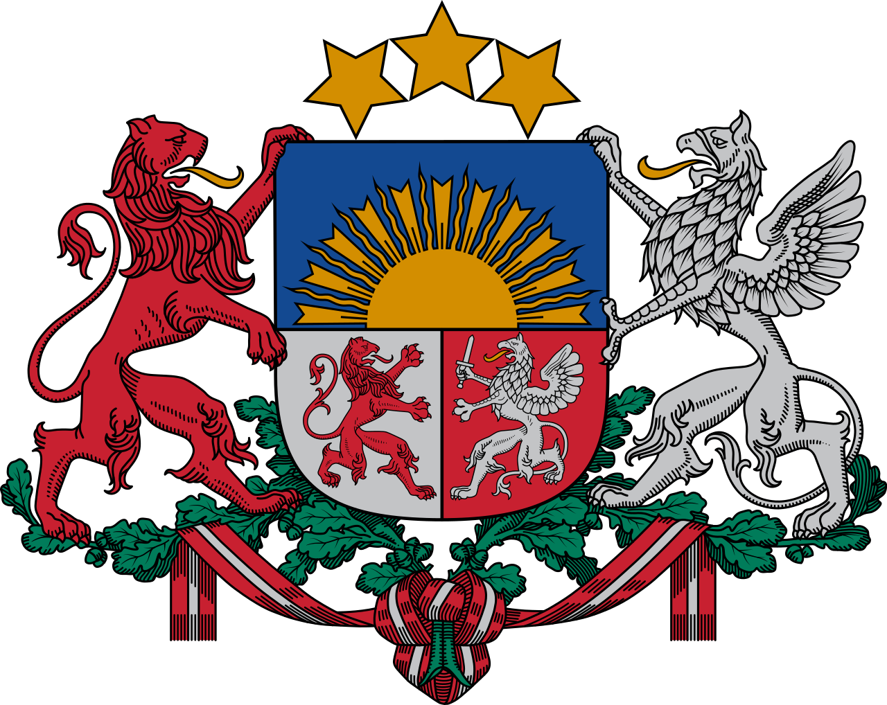
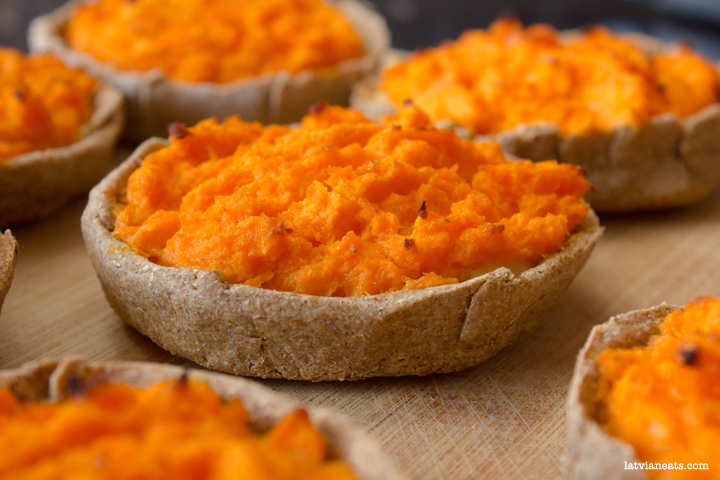

Sklandrausis


This dish is a vegetable pie made from rye pastry and filled with a combination of carrots and potatoes. Due to its traditional nature among Latvians, the European Community (now the European Union) gave it the status of "Traditional Speciality Guaranteed".
Ingredients
- Rye Flour: 400 g
- Butter: 100 g
- Water, warm: 1 cup
- Sugar: 1 teaspoon
- Salt: 1/2 teaspoon
- Medium Carrots: 7
- Sour Cream: 2 tablespoons
- Honey: 2 tablespoons
- Egg: 1
- Medium Potatoes: 2
- Milk: 100 mL
- Butter: 25 g
Steps
- Peel the carrots, cut in quarters, place in a medium saucepan, cover with water and boil until tender.
- Peel the potatoes, cut in quarters, place in a separate saucepan, cover with water and boil until tender.
- While the vegetables are boiling, prepare the dough. Dissolve the salt and sugar in the water. Mix the flour with softened butter and add the water, stir well to form dough. Knead the dough for 5 to 7 minutes until the dough is soft enough to be rolled.
- Preheat the oven to 200 degrees. Roll the dough 3-5 mm thick. Use a 8 cm cookie cutter to cut out 15 discs. Fold 1cm of the edges up to form pastry cases. Place the cases on a baking tray lined with baking paper.
- Prepare the filling. Drain the carrots and place in a food processor. Add honey, egg and sour cream and process for 20 seconds. Drain the potatoes, mash until smooth, add milk and butter and stir until well combined.
- To fill the pastry cases, spread 1 teaspoon of mashed potatoes, top with a tablespoon of processed carrots. Repeat until all cases have been filled.
- Place the baking tray in the oven and bake for 15-20 minutes until the pastry has cooked and the filling turns slightly golden.
Source: Sklandrausis